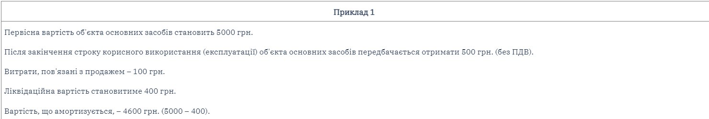

Як відомо, підприємства, організації та інші юридичні особи (далі – підприємства) усіх форм власності (крім бюджетних установ), що мають на балансі основні засоби, мають щомісяця амортизувати їх вартість і відображати в бухгалтерському обліку. У цій статті розглянемо особливості нарахування амортизації та відображення її в бухгалтерському обліку.
Основні зауваження перед початком амортизації
Об'єктом амортизації є вартість, яка амортизується (крім вартості землі та незавершених капітальних інвестицій) (п. 22 Положення (стандарту) бухгалтерського обліку 7 «Основні засоби», затвердженого наказом Мінфіну України від 27.04.2000 р. № 92 (зареєстровано в Мін'юсті України 18.05.2000 р. за № 288/4509, зі змінами та доповненнями, за текстом – ПБО 7)).
Вартість, яка амортизується, – це первісна або переоцінена вартість необоротних активів, за вирахуванням їх ліквідаційної вартості.Ліквідаційна вартість – сума коштів або вартість інших активів, яку передбачається отримати від реалізації (ліквідації) необоротних активів після закінчення строку їх корисного використання (експлуатації), за вирахуванням витрат, пов'язаних із продажем (ліквідацією).

Згідно з п. 23 ПБО 7 при визначенні строку корисного використання (експлуатації) слід ураховувати:
очікуване використання об'єкта підприємством з урахуванням його потужності або продуктивності;
фізичний та моральний знос, що передбачається;
правові або інші обмеження щодо строків використання об'єкта тощо.
Підприємство може встановити строк корисного використання (експлуатації) автомобіля виходячи з передбачуваного строку його експлуатації – шість років, незважаючи на гарантійний період експлуатації.
Підприємство може встановити строк корисного використання (експлуатації) комп'ютера виходячи з його морального зносу – 4 роки.
Підприємство може встановити строк корисного використання (експлуатації) комп'ютера виходячи з його фізичного зносу – 7 років.
Виникає питання: хто та як повинен визначати строк корисного використання, ліквідаційну вартість, метод амортизації?Згідно з п. 23 ПБО 7 нарахування амортизації здійснюється протягом строку корисного використання (експлуатації) об'єкта, який установлюється підприємством при визнанні цього об'єкта активом (при зарахуванні на баланс). Метод амортизації обирається підприємством самостійно з урахуванням передбаченого способу отримання економічних вигід від його використання (п. 28 ПБО 7).
Як зазначено в листі Мінфіну України «Про облікову політику» від 21.12.2005 р. № 31-34000-10-5/27793, розпорядчий документ (здебільшого наказ) про облікову політику підприємства має визначати застосування методів амортизації необоротних активів.
Слід урахув ти, що введення об'єктів основних засобів в експлуатацію здійснюється призначеною на підприємстві комісією та оформляється Актом приймання-передачі (внутрішнього переміщення) основних засобів (типова форма № ОЗ-1).Отже, визначати строк корисного використання, ліквідаційну вартість повинна комісія з введення об'єктів основних засобів в експлуатацію в Акті приймання-передачі. При цьому орієнтуватися комісія має на розпорядчий документ підприємства про облікову політику. Водночас метод амортизації передбачається наказом про облікову політику. Наприклад, якщо таким документом визначено, що підприємство застосовує прямолінійний метод, комісія не може встановити інший метод.
Методи амортизації
Згідно з п. 23 ПБО 7 амортизація основних засобів (крім інших необоротних матеріальних активів) нараховується із застосуванням таких методів: